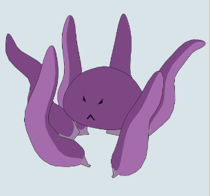
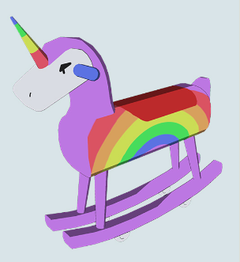
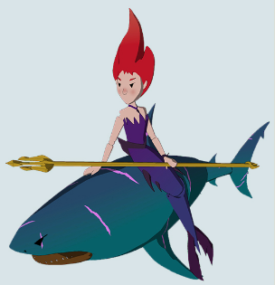
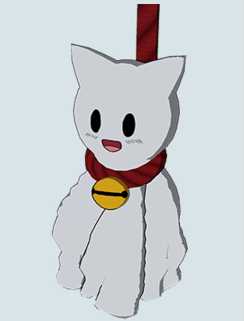
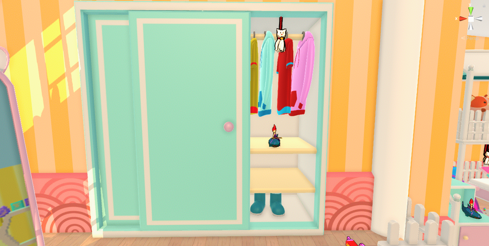
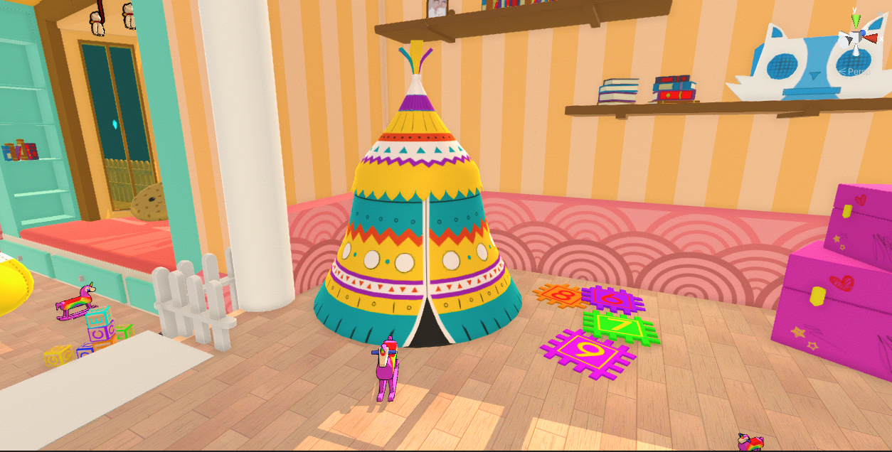
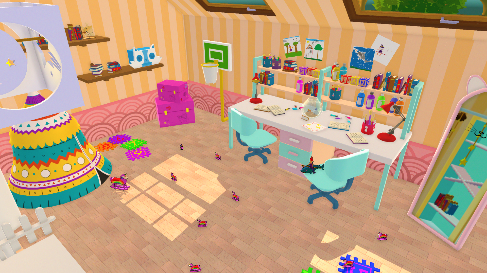
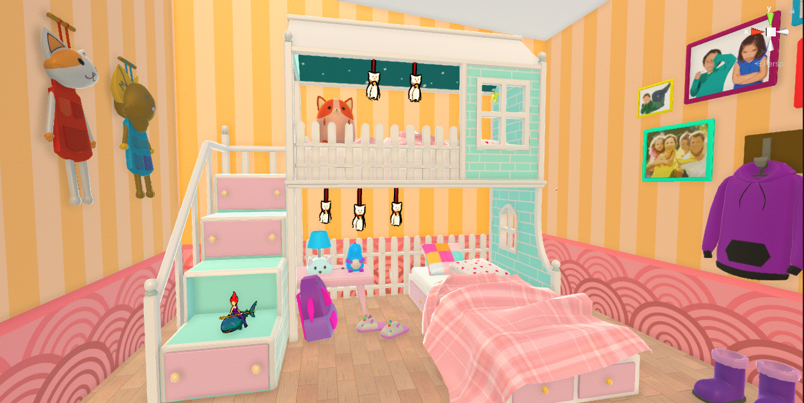

Gameplay Design
I took care of the majority of the gameplay related mechanics for this project. At the time I was playing the early access version of Everspace 2, so I had an optimal reference for what should have been our space shooter,
but as we adapted our concept to our constraints we used toys instead of spaceships. Consequently the environment went through some changes, it would not be outer space but the inside of a house. For this reason I also
took inspiration by games such as TOY STORY 2: Buzz Lightyear to the Rescue and Airfix Dogfighter, as they were set in a very similar environment.
The game core loop would see the player flying around various rooms of a pretty big house (only 1 room in the game demo), exploring it for power-ups and secrets, shooting at the evil toys that make our game enemies, and finally
defeating the room's boss to then go through another house's room. All accompanied by a colorful and light hearted aesthetic and bright visual effects.
Movement
Movement was one of our core mechanics, and we wanted for it to be intuitive and easy to control, so even a younger audience could play without problems.
I started by giving the toy plane a permanent forward movement, so that our players would have only to steer, and worry about the direction rather than the speed of it.
After that, I added a rotation mechanic to the plane, using the Q or E keys, would make our plane rotate to the left or the right, with the camera following said rotation,
giving the chance to the player to perform stunts to evade enemy projectiles or explore parts of the level too tight to be entered while in a horizontal position.
Following I noticed how our collision were not the best when the player hit a wall, as the plane would slide and (tremble? tipo che si bugga) on the hit wall. To solve the
issue I designed a bouncing mechanic, that bounced back the player's plane in the opposite direction from where they hit the wall, that shortly after, got implemented with its animation.
Moreover, after various playtest, I noticed how the automatic forward movement was giving problems to some of our players, when they tried to make precise maneuvers, so later on
I decided to add two buttons, one to speed up and one to slow down the movement of our plane, giving more control to the players that desired it.
Combat
While designing the movement of our player, I was also keeping in mind our second core mechanic, that being the shooting of our player but also of the game's enemies.
For the player I decided to have two types of shooting, one with low damage but high rate of fire, like a minigun but in our case it was not shooting bullets but magic particles;
and the second one being a powerful attack with a low rate of fire, that zoomed our camera in to take aim and shoot a magical rocket. Each shooting type had its own projectile speed,
reload time and magazine size.
When the shooting of the player was done, I and another designer, started working on the enemies. We wanted to have a good variety of enemy types and behaviours, so we designed
4 different types of enemies, each with its own strenght and weaknesses, and they are:
| Ground Stationary: A ground unit that does not move, in our case it was the Bigtopus, our game's boss,
that spawns after all the enemies are defeated. Being stationary makes
it an easy target, but its health points and powerful melee and ranged attacks, make up for that weakness. |
 |
| Ground Mobile: The most frequent enemies, the unicorns are a ground unit that patrol in a set path. When the player enter their range,
they start following them and shooting sparkly projectiles.
The unicorns patrols vary in size, having both small unicorns with low health points, and bigger mama unicorns that are more resistant to the player's magic.
In addition, the unicors deals low damage
with their attacks but they have a unique rate of fire, almost like a laser, making them a threatning unit if not left alone. |
 |
| Elevated Stationary: The sharkmeids are non-moving units placed in elevated positions such as desks or tables. When the player enter their range,
they shoot a high speed beam of light from their
trident. They have a slow rate of fire but they compensate thanks to their projectile speed and damage. |
 |
| Flying Stationary: The teru teru bozu are a flying unit attached to the roof thanks to a rope sustaining them. They also shoot the player as soon
as they enter their range, but their attack is different from the rest. The teru teru bozu shoots a projectile that expands after a few seconds,
forming a massive bubble that damage everything inside it. In exchange they have a short range and even though they are flying, they do not really
move around, as their rope lock them in place. |
 |
Feedback
After the core mechanics were ready, it was time to design how to communicate all those actions to the player.
I started with a standard Health bar in our UI, showing the player´s current health. After that, we added an animation
for when the player gets hit, and a red outline on the screen, to communicate it as clearly as possible.
Successively, I wanted to prevent spam shooting in our game, so I designed a overcharge system that disabled the player´s shooting if they shot too
many bullets in a short amount of time. To convey that without adding an ammo counter, I added another bar, inside the crosshair to be specific,
that was slightly filled every time the player shot a bullet, and emptyed if they did not shoot for a few seconds.
Replayability
The game was supposed to have 5 different rooms for our player to explore, but our vertical slice only had 1 room
to show our gameplay. Even so, during playtest we observed how some of our players wanted to compete with each other, trying to
complete the level in the fastest way possible. Analyzing that, I decided to add a score system, that gives points to the player on
each enemy defeated depending on a multiplier based on playtime. This mechanic, gave a visual way to our player to discover who would
have the highest score, moreover, it created retention, improving our replayability, as players would try to improve their score.
Level Design
For this project I worked closely with the art department to create our game level. As we wanted to have a believable space, before
creating mockups or blockouts, each member of the team sent a photo of their room as reference. I started analyzing them to see where the furnishings were
placed, which were the recurrent items, and how large our environment should be. After having a rough idea, I created the level blockout in engine.
As soon as we started playtesting our movement in the scene, we noticed that if the player moved in a straight direction, they would traverse the
entirety of the room in less than 10 seconds, and that was an issue.
I and the rest of the team liked the movement speed of our character, so the only choice was to make the level bigger. I started looking at references of mansions´ rooms,
to then create a new blockout that was 3 times larger when compared to our old level. Then, I divided it into 7 different areas,
each having something that differentiate it from the others. Some areas would be safe zones, some would contain hidden power-ups, others would have more
enemies. In doing so I tried to give meaning to each part of the room and have a different pacing depending on where the player would fly.




System Design
With the core elements in place, I started balancing the stats for the player and the enemies.
When we started designing the enemies we wanted for them to feel like distinctive units, for this reason
I gave each enemy a unique rate of fire, range, bullet speed, lifetime and damage.
When that was done, I designed how many enemies would spawn during the 2 game waves, what path they would patrol, and then I implemented various
spawnpoints for some of them, to have somewhat different runs if the player restarted the game.
After that, the game went through many playtest cycles, and I ended modifying many of the enemies´ stats to reach the desired game feel.
During playtest we also noticed how the majority of the players preferred a risky approach when confronting enemies rather than using their range
advantage, resulting in soaking in enemy projectiles, leading to game over. Hence, I introduced a mechanic where enemies had a chance to drop
healing orbs, that supported this risky playstyle while also helping beginner players survive longer in the level.
Moreover, as the designer in charge of balancing, I playtested the game for many hours, and worked closely with my group programmers.
Like any game, while playtesting I discovered many bugs, so I created a bug tracking document encompassing how to replicate them,
their fix priority, and possible solutions.
Conclusion
Throughout this nine-week project, I had the privilege of wearing many hats and contributing to
various aspects of our game. Having to step in and help wherever we faced difficulties,
I am grateful for the many opportunities to learn and contribute in meaningful ways.
Wonder Wings is the game that I am most proud at the moment not just for the tasks I accomplished
but more so for the successful result of our teamwork and the rewarding journey we navigated together.